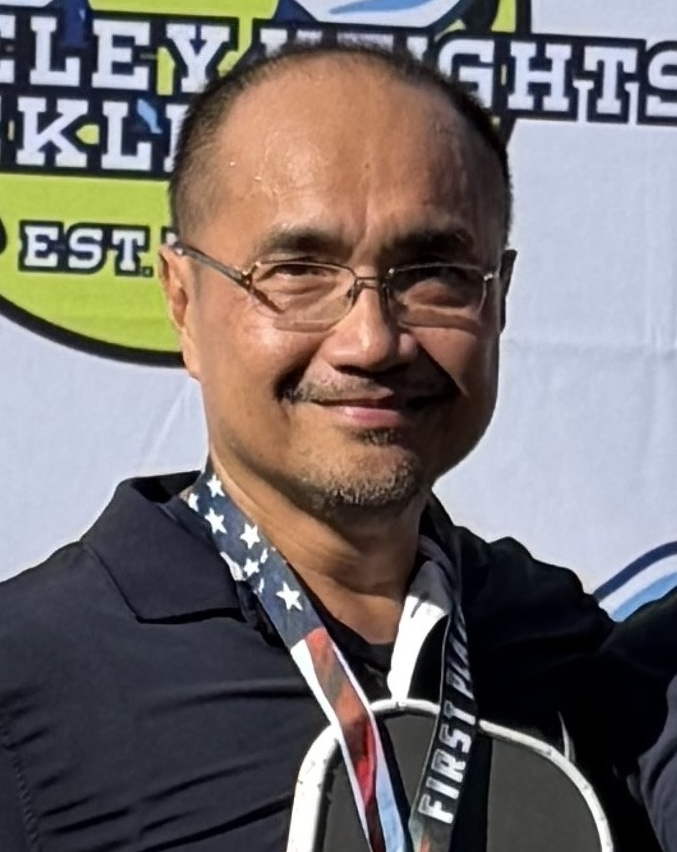

Private lessons
One-on-one coaching focused on the parts of your game that will make the biggest difference.
Start with a lessonPickleball coaching in Warren, NJ
Private, personalized coaching with Mark Lim—PPR Level 1 certified and a 4.46 DUPR—built to sharpen your skills, court awareness, and confidence.

Coaching for every stage
Clear instruction, useful repetitions, and a plan built around how you want to play.
One-on-one coaching focused on the parts of your game that will make the biggest difference.
Start with a lessonFocused sessions that combine quality coaching, purposeful drills, and a fun social court.
Join a clinicStart with the essentials—rules, technique, and game sense—so you can walk onto any court ready to play.
Learn the basicsMeet your coach
Mark Lim is a PPR Level 1 certified coach with a 4.46 DUPR and multiple tournament wins. Over two years of coaching, he has helped players turn the details into dependable habits—balancing sound fundamentals with the decision-making that makes pickleball feel easier and more fun.
Whether you are picking up a paddle for the first time or sharpening an established game, you will leave with clear takeaways to use in your next match.
Work with MarkWhere we play
Mark coaches out of LBF Pickleball, a dedicated indoor facility in Warren, New Jersey. Reach out with your preferred times and he will confirm court availability.
Visit LBF PickleballGood to know
Coaching is designed for beginners through experienced competitive players. Mark will tailor each session to your goals and current level.
Bring a paddle, comfortable court shoes, water, and a willingness to learn. Details for your specific session can be confirmed when booking.
Mark coaches at LBF Pickleball in Warren, NJ. Court availability will be confirmed when you book—reach out with your preferred schedule.
Ready when you are
Book a free 15-minute intro call. Choose a time that works for you, and Mark will take it from there.